Source:
Source: 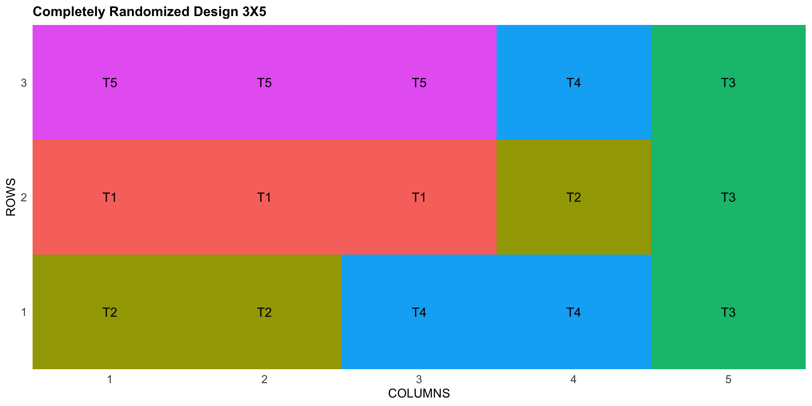
Main principles of experimental design
- Replication
- Randomization
Departamento de Genética
Escola Superior de Agricultura Luiz de Queiroz
Universidade de São Paulo
18/01/2026
Agronomist (UFCA→ 2018)
Msc. in Genetics and plant breeding (UENF→2020)
Dsc. in Genetics and breeding (UFV→ 2024)
Postdoctoral research scholar (UFV→2024-2025); (ESALQ/USP→Current)
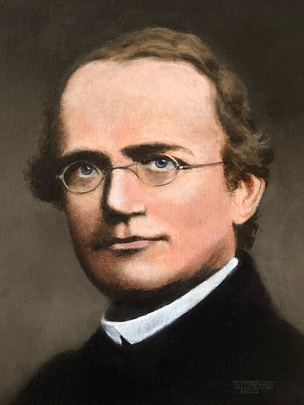
Austrian monk carried out experiments (1854-1863)
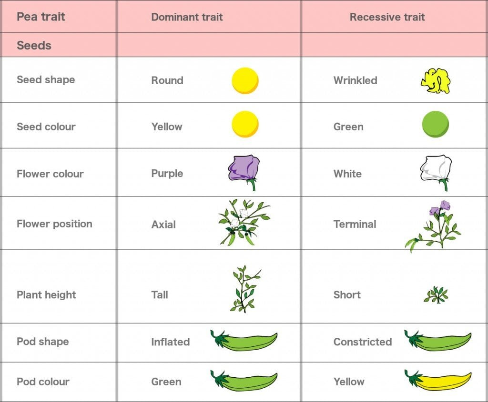
Source: ScienceABC - Laws of inheritance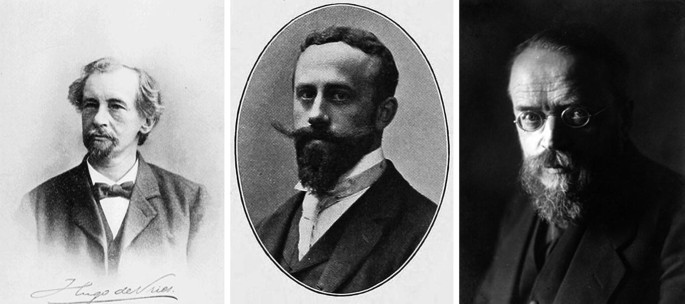
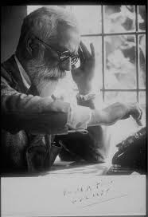
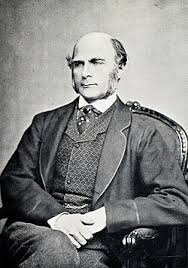

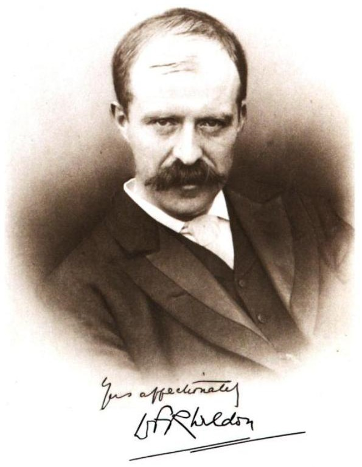
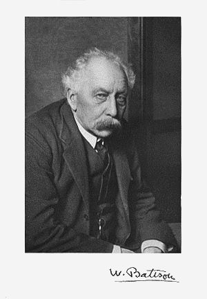
Basic model
\[ P = G + E \]
Gene action
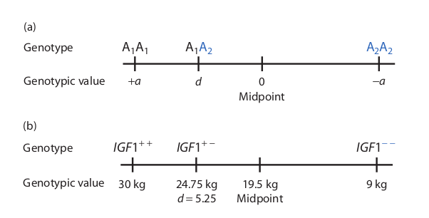
Mean Genotypic Value in a Population
| Genotypes | Freq | Genotypic Value | Freq × Value |
|---|---|---|---|
| A₁A₁ | \(p^2\) | \(+a\) | \(p^2a\) |
| A₁A₂ | \(2pq\) | \(d\) | \(2pqd\) |
| A₂A₂ | \(q^2\) | \(-a\) | \(-q^2a\) |

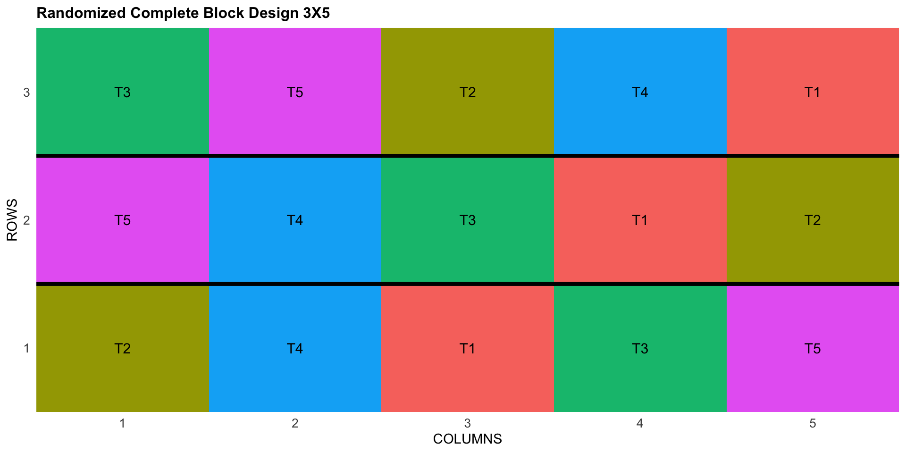
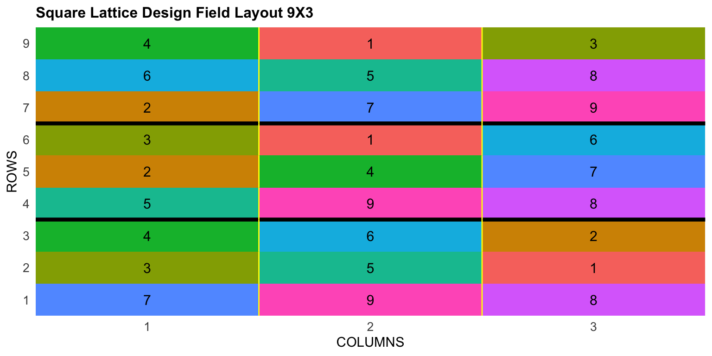
PLOT REP IBLOCK TREATMENT
1 1001 1 1 G-7
2 1002 1 1 G-3
3 1003 1 1 G-4 PLOT ROW COLUMN CHECKS BLOCK ENTRY
1 1001 1 1 1 1 3
2 1002 1 2 1 1 2
3 1003 1 3 0 1 23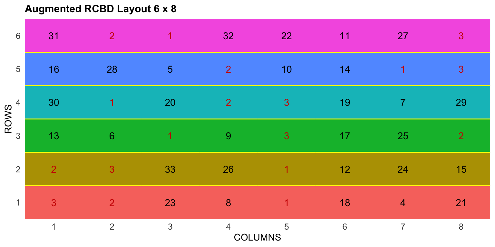
Repetição
Princípio que consiste em repetir mais de uma vez os tratamentos em diferentes unidades experimentais
Casualização
Consiste em atribuir de forma aleatória os tratamentos às unidades experimentais
Controle Local
Visa construir blocos em um experimento quando as unidades experimentais estiverem dispostas em condições ambientais heterogêneas
ANOVA
Ronald Fisher introduziu o termo variância e propôs a sua análise formal em 1918 na revista theoretical population genetics com o artigo The Correlation Between Relatives on the Supposition of Mendelian Inheritance.
Definição
É um método para testar a igualdade de três ou mais médias populacionais baseado na análise das variâncias amostrais
Os dados amostrais são separados em grupos segundo característica (fator).
Aditividade
Condição imposta pelo modelo onde os diversos efeitos se somam.
Normalidade dos erros
Os erros devem ser normalmente distribuídos
Homogeneidade de variâncias
Assume que os erros possuem a mesma variância.
Independência dos erros
A probabilidade do erro de uma observação qualquer assumir um dado valor não deve depender dos valores dos outros erros, o que define a independência deles.
Lógica da ANOVA
Pela lógica da ANOVA o pesquisador compara a variação acidental, ou seja, aquela devida ao acaso, com a variação devido aos tratamentos.
Pelo procedimento da análise de variância pode se estimar a soma de quadrados totais e decompô-la nos seus vários componentes, permitindo concluir sobre as causas ou fatores de variação.
\[ SQ_{Total}= \sum_{ij}Y_{ij}^2- C \]
onde \(\sum_{ij}Y_{ij}^2\) é o somatório de Yij ao quadrado e C é um fator de correção
Quadrado médio
Os quadrados médios são obtidos dividindo-se as Soma de quadrados pelos gl das respectivas fontes de variação.
A esperança corresponde ao valor médio esperado de um quadrado médio, caso o experimento fosse repetido infinitas vezes.
\[ E(QM_T)= \sigma_e^2 + r\sigma_t^2 \]
A razão entre QMT/QME fornece o valor de F para se quantificar o componente \(\sigma_t^2\)
DIC
\[ Y_{ij} = \mu + t_i + e_{ij} \]
\(Y_{ij}\) é o valor relativo a observação \(ij\)
\(\mu\) é a média geral do experimento
\(t_i\) é o efeito do tratamento \(i\)
\(e_{ij}\) é o erro aleatório
Hipóteses
Hipótese Nula \(H_0\): \(\mu_1 = \mu_2 = \mu_i\)
Hipótese Alternativa \(H_1\): \(\mu_1 \neq \mu_2 \neq \mu_i\)
DBC
\[ y_{ij}= \mu + t_i + b_j + e_{ij} \]
\(Y_{ij}\) é o valor relativo a observação \(ij\)
\(\mu\) é a média geral do experimento
\(t_i\) é o efeito do tratamento \(i\)
\(b_j\) é o efeito do bloco \(j\)
\(e_{ij}\) é o erro aleatório
Hipóteses
Hipótese Nula \(H_0\): \(\mu_1 = \mu_2 = \mu_i\)
Hipótese Alternativa \(H_1\): \(\mu_1 \neq \mu_2 \neq \mu_i\)
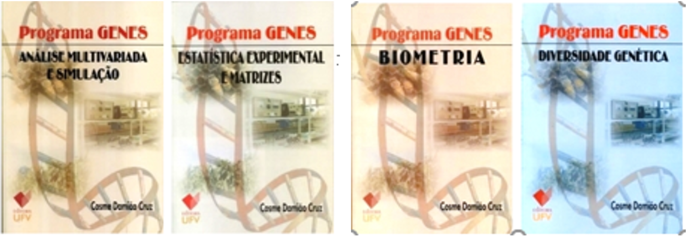
1987 - Primeiras Rotinas DOS
1990 - Proc. biométricos
(3,1 Mbytes - 9 disquetes de 5 1/4 )
1993 - Gqmol
2001 - Windows 4Mb
2013 - Integração com o Software R
2023 - Desenvolvimento de novas funções (Cruz 2013)
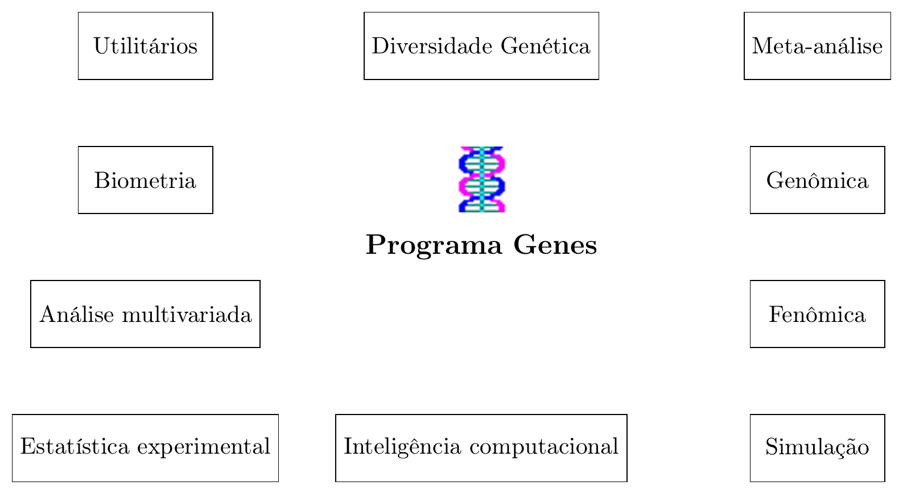
Figure 1: Genes software architecture diagram
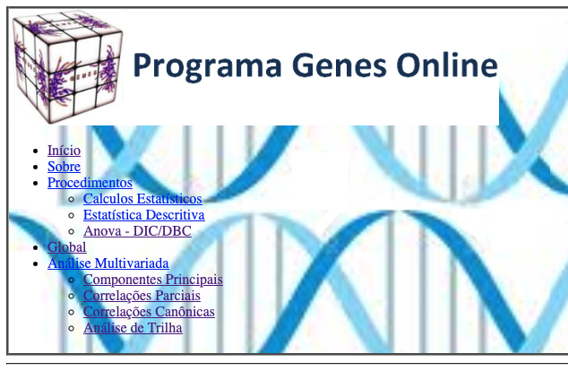
Tutoriais e material de apoio podem ser consultado na página Genes News no facebook.
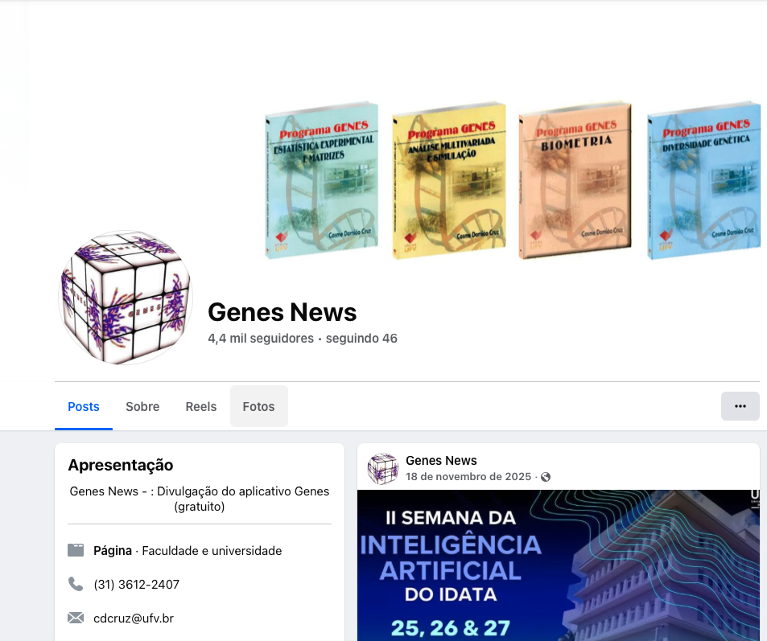
Experimentos conduzidos sobre condições controladas e homogêneas
Ex: Ramalho, Ferreira, and Oliveira (2012) - Absorção de água por grãos de feijão
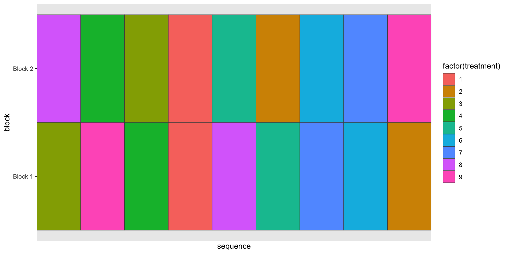
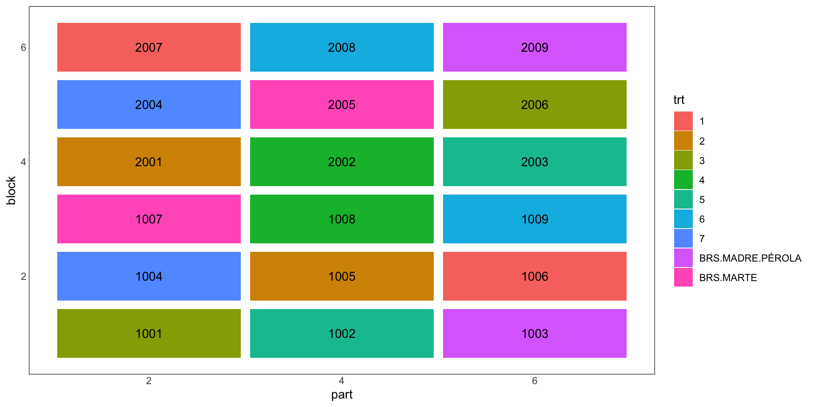
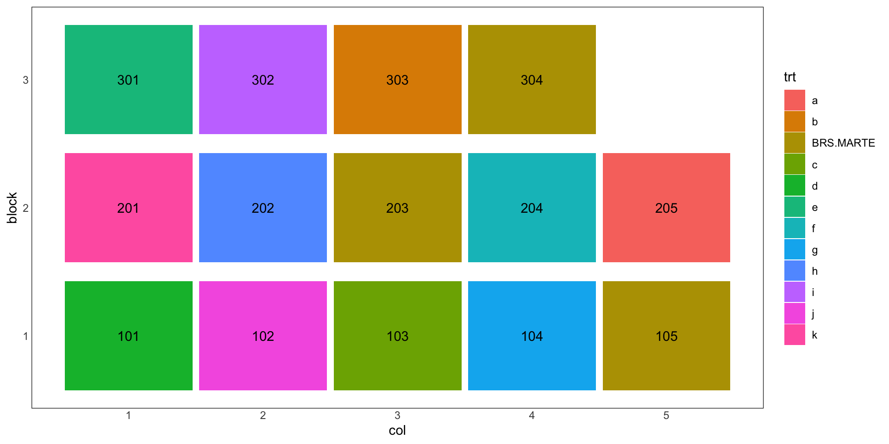
Teste de comparação de médias com um controle (testemunha)
H0: controle e o tratamento possuem médias iguais.
\[ DMS_{Dunnet} = d \propto (k,Gl_{Resíduo}) \frac{\sqrt{2xQMR}}{r} \]
Planejamento e Análise de Experimentos Agrícolas - Dia 1